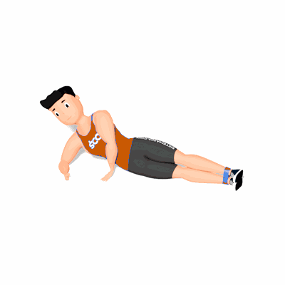

Elevação de Perna Lateral com Faixa Elástica

O exercício tem como objetivo fortalecer os músculos abdutores do quadril.
Ficha Técnica
Tipo: Funcional
Grupo Muscular: Glúteo
Aparelho: Nenhum
Músculos: Nenhum
Como realizar
- Coloque a faixa acima dos joelhos ou em volta dos tornozelos. Deite-se de lado com as pernas retas e paralelas;
- Apoie a cabeça na mão, apoie-a no bíceps ou apoie-se no antebraço;
- Levante a parte superior da perna em direção ao teto o mais alto que puder, sem inclinar o quadril, e então abaixe-a lentamente para uma repetição;
- Mantenha a parte superior da perna alinhada com a inferior durante todo o movimento. Concentre-se no andamento - lento e constante - e na boa execução.
 RC STORE
RC STORE